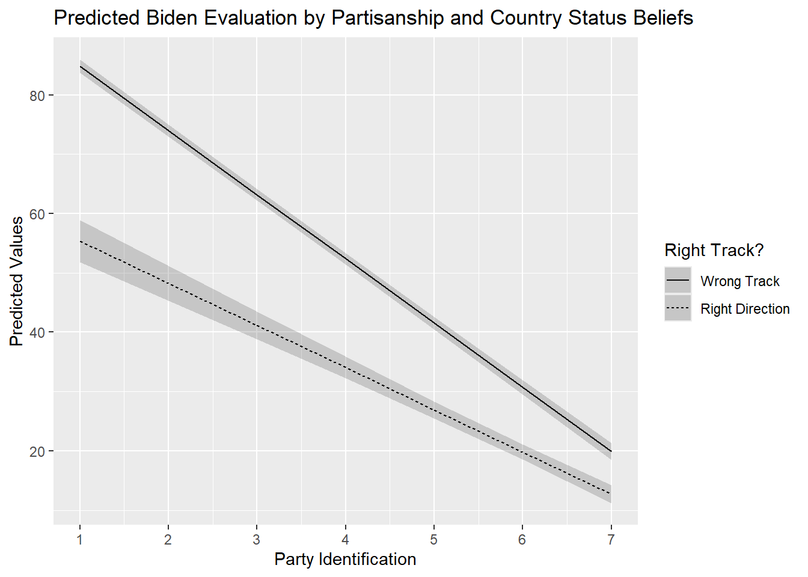
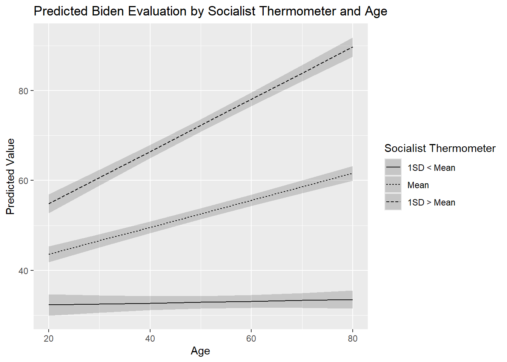
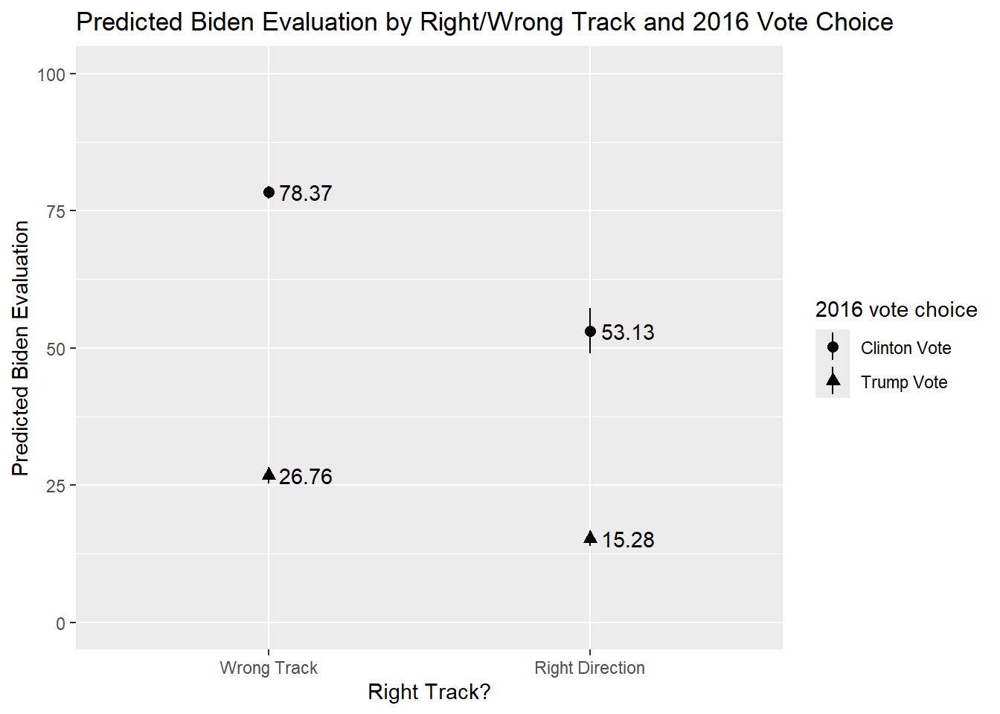
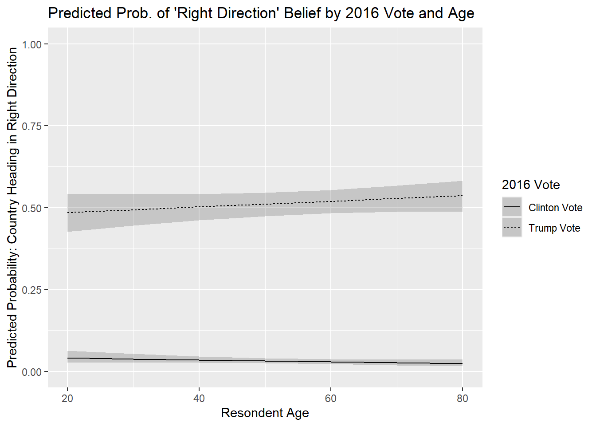

#Packages
library(rio) #Importing data
library(broom) #Model summaries
library(marginaleffects) #Marginal effects and predictions
library(tidyverse) #Data management & plotting
#Data
anes <- import("data/anes_interactions.rda")
#Example Models
biden_int <- lm(biden ~ pid * right_track + rural_urban, data = anes)
righttrack_int <- glm(right_track ~ vote2016 * age + rural_urban,
family = "binomial", data = anes)17 Predicted Values from Interaction Models
One way we can extract meaningful information about an interaction is via the calculation of marginal effects as we saw in the last chapter. A second way we can better understand interactions is by looking at predicted values where we investigate the predicted score (or predicted probabilities for logistic regression) for Y at specific value combinations of X and Z. We can obtain these via the predictions() function, also from the marginaleffects package. The information in this chapter will build on previous discussions of how to obtain predicted values (linear regression: Chapter 5; logistic regression: Chapter 11).
17.1 Binary x Continuous Interaction
Previously, we predicted Biden evaluations based on an interaction between a continuous variable (partisan identity, pid) and a binary variable (an evaluation of whether the country is on the right track or not, right_track).
We will now use predictions() to produce predicted values for each combination of the two variables in the interaction (e.g., pid = 1 & right_track = “Right Direction”, pid = 1 & right_track = “Wrong Track”, pid = 2 & right_track = “Right Direction”…). If one, or both, of the variables in the interaction can take on many values, then we would specify some subset of values from across the range of the variable (e.g., minimum, mean, and maximum). Other predictors in the model will be held at their mean (continuous variables) or modal (factor variables) values.
#Calculates the predictions and saves them to a new object
biden_int_preds <- predictions(biden_int,
newdata = datagrid(pid = c(1,2,3,4,5,6,7),
right_track = c("Right Direction", "Wrong Track")))biden_int_preds <- predictions(biden_int,-
We apply the
predictionsfunction on the model specified in brackets. We store our results in an object (here calledbiden_int_preds) so that we can use it again later on. newdata = datagrid(pid = c(1,2,…7), right_track = c("Right Direction", "Wrong Track")))-
We specify the values of our predictors for which we want predictions via the
newdata = datagrid()option. Here, we specify that we want predictions for the values ofpidfrom 1 through 7 separately based on whether theright_trackvariable equals “Right Direction” or “Wrong Track”.1 In your examples, you would change the names of your variables and the values you want to make predictions from.
We obtain a dataset with 14 rows of predictions : 7 (values for pid) x 2 (values for right_track):
# print the results
biden_int_preds
pid right_track Estimate Std. Error z Pr(>|z|) S 2.5 % 97.5 %
1 Right Direction 55.4 1.808 30.6 <0.001 681.6 51.8 58.9
1 Wrong Track 84.8 0.581 146.0 <0.001 Inf 83.7 86.0
2 Right Direction 48.3 1.493 32.3 <0.001 759.2 45.3 51.2
2 Wrong Track 74.0 0.515 143.7 <0.001 Inf 73.0 75.0
3 Right Direction 41.1 1.193 34.5 <0.001 863.3 38.8 43.5
3 Wrong Track 63.2 0.486 130.1 <0.001 Inf 62.2 64.1
4 Right Direction 34.0 0.925 36.8 <0.001 982.0 32.2 35.8
4 Wrong Track 52.4 0.500 104.8 <0.001 Inf 51.4 53.3
5 Right Direction 26.9 0.724 37.2 <0.001 1002.1 25.5 28.3
5 Wrong Track 41.5 0.554 75.0 <0.001 Inf 40.5 42.6
6 Right Direction 19.8 0.656 30.2 <0.001 662.9 18.5 21.1
6 Wrong Track 30.7 0.638 48.2 <0.001 Inf 29.5 32.0
7 Right Direction 12.7 0.757 16.8 <0.001 207.4 11.2 14.2
7 Wrong Track 19.9 0.741 26.8 <0.001 524.2 18.4 21.3
rural_urban
Suburb
Suburb
Suburb
Suburb
Suburb
Suburb
Suburb
Suburb
Suburb
Suburb
Suburb
Suburb
Suburb
Suburb
Columns: rowid, estimate, std.error, statistic, p.value, s.value, conf.low, conf.high, rural_urban, pid, right_track, biden
Type: response The predictions can be visually presented in a plot. The process is similar to creating a predicted values plot from a model without an interaction (see Section 8.6). However, there is one important addition: the linetype statement. See the information below for an important note about this option.
ggplot(biden_int_preds, aes(x = pid, y = estimate, linetype = right_track)) +
geom_line() +
geom_ribbon(aes(ymin = conf.low, ymax = conf.high), alpha = 0.2) +
labs(title = "Predicted Biden Evaluation by Partisanship and Country Status Beliefs",
x = "Party Identification",
y = "Predicted Values",
linetype = "Right Track?") +
scale_x_continuous(breaks=c(1,2,3,4,5,6,7))
ggplot(…, linetype = right_track)) + geom_line() + geom_ribbon(…) +-
This portion of the syntax is nearly identical to the syntax used in previous sections to produce a predicted values plot. There is one important addition of note, however:
linetype = right_track. This tellsggplot()that the predicted values for each category of “right_track” should be given a different type of line so that we can differentiate them in the plot. We could differentiate these predicted values in alternative ways, e.g., by separating them by color (color = right_track), although we should be careful to make sure that such output is still easy to read. One important note here: thelinetype(andcolor) statement only works with factor variables. Theright_trackvariable is already a factor in our example, so we did not need to take any further steps, but we would have to in other scenarios as seen below. See Section A.5 for more on this topic. Ultimately, this syntax could generally be kept the same in your examples. labs(…) +-
Here we give informative labels to our plot, the axes, and to the legend for linetype.
scale_x_continuous(breaks=c(1,2,3,4,5,6,7))-
This line of syntax tells R that we want a break or tick on the x-axis at 1, 2, … 7. This helps make this plot a bit easier to read/interpret but may not be needed in your examples.
17.2 Continuous x Continuous Interaction
The process to get, and plot, predicted values is similar for interactions with continuous variables. Yet, things can be more complicated for predictions and plotting when we have two continuous variables, especially when they can take on many different values.
Last chapter, we fit a model that predicted evaluations of Joe Biden and which contained an interaction between age and socialists . Here is that model again:
#Run the model and store results
biden_int2 <- lm(biden ~ socialists * age + rural_urban, data = anes)
#Coefficients
tidy(biden_int2)# A tibble: 7 × 5
term estimate std.error statistic p.value
<chr> <dbl> <dbl> <dbl> <dbl>
1 (Intercept) 30.0 2.00 15.0 4.68e-50
2 socialists 0.197 0.0381 5.17 2.46e- 7
3 age -0.0752 0.0345 -2.18 2.95e- 2
4 rural_urbanRural -10.9 1.08 -10.1 9.02e-24
5 rural_urbanSmall Town -7.04 0.924 -7.62 3.00e-14
6 rural_urbanCity 0.455 0.883 0.516 6.06e- 1
7 socialists:age 0.00980 0.000699 14.0 6.21e-44Both of the variables in the interaction can take on many values. We could calculate predictions for specific subsets of values, e.g. from 0 to 100 with increments of 10 for socialists, and 20 to 80 with increments of 10 for age. However, this would give use too many values to reasonably plot (or understand).
A common approach is to choose one of the two predictors, and for this one make predictions for 3 values: the variables’s mean, 1 standard deviation (SD) below the mean, and 1 standard deviation (SD) above the mean. In principle, the continuous variable is transformed into a factor variable with 3 categories: low value, medium value, and high value. This enables us to produce a plot with three lines, one for each of these values. We generally transform the moderator variable (Z).
We will take the socialists variable as the moderator for this example. We first need to calculate the three relevant values (mean, 1 SD below, and 1 SD above). We have to make sure we only calculate these statistics for the observations used in the model. We can accomplish by using the predictions() function from the marginaleffects package as this function enables us to create a dataset with only the observations used in fitting the model (see Chapter 5).2
predictions(biden_int2) |> #creates new object with data just obs in model
summarise(
mean_below = mean(socialists) - sd(socialists), #1 SD below the mean
mean = mean(socialists), #Mean of variable
mean_above = mean(socialists) + sd(socialists)) #1 SD above the mean mean_below mean mean_above
1 9.716161 38.33639 66.95661We next calculate the predicted values using the values we just calculated. We will ask for predictions in ten year increments across the age spectrum.
#predicted values
biden_int2_preds <- predictions(biden_int2,
newdata = datagrid(
socialists = c(9.72, 38.34, 66.96),
age = c(20,30,40,50,60,70,80)))
#Print the results
biden_int2_preds
socialists age Estimate Std. Error z Pr(>|z|) S 2.5 % 97.5 %
9.72 20 32.3 1.208 26.8 <0.001 522.3 30.0 34.7
9.72 30 32.5 0.983 33.1 <0.001 796.8 30.6 34.5
9.72 40 32.7 0.802 40.8 <0.001 Inf 31.2 34.3
9.72 50 32.9 0.703 46.9 <0.001 Inf 31.6 34.3
9.72 60 33.1 0.718 46.1 <0.001 Inf 31.7 34.6
9.72 70 33.3 0.843 39.6 <0.001 Inf 31.7 35.0
9.72 80 33.5 1.037 32.3 <0.001 759.7 31.5 35.6
38.34 20 43.6 0.891 48.9 <0.001 Inf 41.8 45.3
38.34 30 46.6 0.755 61.7 <0.001 Inf 45.1 48.1
38.34 40 49.6 0.657 75.5 <0.001 Inf 48.3 50.9
38.34 50 52.6 0.612 86.0 <0.001 Inf 51.4 53.8
38.34 60 55.6 0.633 87.8 <0.001 Inf 54.4 56.8
38.34 70 58.6 0.715 82.0 <0.001 Inf 57.2 60.0
38.34 80 61.6 0.839 73.5 <0.001 Inf 60.0 63.3
66.96 20 54.8 1.083 50.6 <0.001 Inf 52.7 57.0
66.96 30 60.6 0.892 68.0 <0.001 Inf 58.9 62.4
66.96 40 66.4 0.756 87.9 <0.001 Inf 65.0 67.9
66.96 50 72.3 0.709 102.0 <0.001 Inf 70.9 73.6
66.96 60 78.1 0.766 101.9 <0.001 Inf 76.6 79.6
66.96 70 83.9 0.909 92.2 <0.001 Inf 82.1 85.7
66.96 80 89.7 1.105 81.2 <0.001 Inf 87.5 91.8
rural_urban
Suburb
Suburb
Suburb
Suburb
Suburb
Suburb
Suburb
Suburb
Suburb
Suburb
Suburb
Suburb
Suburb
Suburb
Suburb
Suburb
Suburb
Suburb
Suburb
Suburb
Suburb
Columns: rowid, estimate, std.error, statistic, p.value, s.value, conf.low, conf.high, rural_urban, socialists, age, biden
Type: response Our dataset has 21 observations: 7 values for age x 3 values for socialists.
If we want to plot the results using the linetype argument, then we need to first convert the socialists variable in the predictions dataset that we just created into a factor variable. We use the factor() command as the socialists variable in our new dataset is numeric and not labelled.
#Class of variable
class(biden_int2_preds$socialists)[1] "numeric"#No value labels
attributes(biden_int2_preds$socialists)NULL#Conert into a factor variable
biden_int2_preds <- biden_int2_preds |>
mutate(socialists = factor(socialists,
levels = c(9.72, 38.34, 66.96),
labels = c("1SD < Mean", "Mean", "1SD > Mean")))We can then plot as we did before:
ggplot(biden_int2_preds, aes(x = age, y = estimate, linetype = socialists)) +
geom_line() +
geom_ribbon(aes(ymin = conf.low, ymax = conf.high), alpha = .2) +
labs(title = "Predicted Biden Evaluation by Socialist Thermometer and Age",
y = "Predicted Value",
x = "Age",
linetype= "Socialist Thermometer")
17.3 Binary x Binary Interaction
The process for obtaining predicted values, and creating a predicted values plot, from an interaction between two binary variables follows similar principles as above.
Here is the model we will use for this example. It includes an interaction between two binary factor variables: one concerning whether the respondent thinks the country is heading in the right or wrong direction (right_track) and one concerning whether the respondent reported voting for Hillary Clinton or Donald Trump in 2016 (vote2016).
#Run the model and store results
biden_int3 <- lm(biden ~ right_track * vote2016 + rural_urban, data = anes)
#Summary of results
tidy(biden_int3)# A tibble: 7 × 5
term estimate std.error statistic p.value
<chr> <dbl> <dbl> <dbl> <dbl>
1 (Intercept) 78.4 0.581 135. 0
2 right_trackRight Direction -25.2 2.11 -12.0 1.20e-32
3 vote2016Trump Vote -51.6 0.770 -67.0 0
4 rural_urbanRural -2.77 0.907 -3.05 2.30e- 3
5 rural_urbanSmall Town -1.67 0.785 -2.13 3.34e- 2
6 rural_urbanCity 0.452 0.753 0.601 5.48e- 1
7 right_trackRight Direction:vote2016Trum… 13.8 2.28 6.04 1.61e- 9We will use predictions() function to calculate predicted values for all combinations of the two variables, yielding four predictions in total: Clinton voter & “right direction”, Clinton voter & “wrong track”, Trump voter & “right direction”, and Trump voter and “wrong track”.
predictions(
biden_int3,
by = c("right_track", "vote2016"),
newdata = "mean")
right_track vote2016 Estimate Std. Error z Pr(>|z|) S 2.5 %
Right Direction Trump Vote 15.3 0.737 20.7 <0.001 314.8 13.8
Right Direction Clinton Vote 53.1 2.119 25.1 <0.001 458.6 49.0
Wrong Track Trump Vote 26.8 0.775 34.5 <0.001 864.8 25.2
Wrong Track Clinton Vote 78.4 0.581 134.9 <0.001 Inf 77.2
97.5 %
16.7
57.3
28.3
79.5
Columns: rowid, right_track, vote2016, estimate, std.error, statistic, p.value, s.value, conf.low, conf.high, rural_urban, rowid_dedup
Type: response by = c("right_track", "vote2016")-
We have previously seen that we can obtain predicted values for all levels of a categorical variable using the
by = "variable name"option. If both predictors in the interaction term are binary/factor in nature, then we can include them both in this line to obtain predictions for all combinations of the two variables. newdata = "mean")-
We need this option in the present case to tell
predictions()to hold the other control variable(s) in the equation constant at their mean or mode. In the present case, this ensures thatrural_urbanwill be held constant at its modal category (“suburb”) when the predictions are being calculated.
We can communicate these results via a predicted values plot. The basic syntax for this plot is similar to the syntax used to create a plot of predicted values for a single binary/factor variable from earlier sections (see, for instance, Section 8.6). As in earlier examples, we will need to tell ggplot() to separate the graphed values by value of the moderator. We do this here via the shape = option, which tells ggplot() to use different shapes for the plotted predictions.3
predictions(biden_int3,
by = c("right_track", "vote2016"),
newdata = "mean") |>
ggplot(aes(x = right_track, y=estimate, shape = vote2016)) +
geom_pointrange(aes(ymin = conf.low, ymax = conf.high)) +
geom_text(aes(label = round(estimate, 2), hjust=-0.2)) +
labs(title = "Predicted Biden Evaluation by Right/Wrong Track and 2016 Vote Choice",
x = "Right Track?",
y = "Predicted Biden Evaluation",
shape = "2016 vote choice") +
scale_y_continuous(limits = c(0 , 100))- 1
-
We did this all in one go. Of course, you could separate matters into chunks - store the predictions as an object first and then use that object in a separate
ggplot()call. - 2
-
The markers in a plot like this could overlap if the predicted values are very similar within categories (e.g,. if it were 26.76 and 27.50 that we were plotting for Wrong Track). One solution (if that were a problem) would be to add
, position = position_dodge(width = 0.2)in thegeom_pointrange()portion, after theaes()bit. This would offset the points from one another. You could control by how much by changing the number. - 3
- Puts the y-axis on a 0-100 point scale. As in prior examples, this may not be necessary in all situations, but we thought it made the interaction a bit easier to follow here.

17.4 Logistic Regression Example
The foregoing all applies to interactions in logistic regression models as well with the specifics depending on the type of interaction being investigated. For instance, the model rightrack_int featured an interaction between the binary variable vote2016 and the continuous variable age in a model predicting whether a respondent thinks the country is heading in the right direction or not.
tidy(righttrack_int)# A tibble: 7 × 5
term estimate std.error statistic p.value
<chr> <dbl> <dbl> <dbl> <dbl>
1 (Intercept) -2.95 0.345 -8.56 1.08e-17
2 vote2016Trump Vote 2.82 0.373 7.55 4.22e-14
3 age -0.00946 0.00630 -1.50 1.33e- 1
4 rural_urbanRural 0.208 0.111 1.87 6.15e- 2
5 rural_urbanSmall Town 0.111 0.101 1.10 2.73e- 1
6 rural_urbanCity 0.160 0.111 1.45 1.47e- 1
7 vote2016Trump Vote:age 0.0129 0.00682 1.89 5.84e- 2We can follow the same steps as seen earlier when we had a binary x continuous interaction with a linear model. Here, for instance, we obtain the predicted probability of a respondent saying the country is heading in the right direction for a combination of age values (from 20 to 80 years old in 10 year increments) for each category for the vote2016 variable. We also plot these values using the same basic syntax as above.
predictions(righttrack_int,
newdata = datagrid(age = seq(from = 20,to = 80, by = 10),
vote2016 = c("Trump Vote", "Clinton Vote"))) |>
ggplot(aes(x=age, y=estimate, linetype=vote2016)) +
geom_line() +
geom_ribbon(aes(ymin=conf.low, ymax=conf.high), alpha = 0.2) +
labs(title = "Predicted Prob. of 'Right Direction' Belief by 2016 Vote and Age",
y = "Predicted Probability: Country Heading in Right Direction",
x = "Resondent Age",
linetype = "2016 Vote") +
scale_y_continuous(limits=c(0,1)) 
An alternative way of writing out the pid portion would be: “pid = c(1:7)”. This would tell R we want predictions for each whole number between 1 and 7.↩︎
The alternative would be to start with our original dataset (
anes), select all of the variables in the model, filter out all missing values, and then produce the summary statistics. For instance:anes |> filter(complete.cases(biden, socialists, age, rural_urban)) |> select(socialists) |> summarize().predictions()is thus a bit simpler since it accomplishes the middle steps all at once for us.↩︎An alternative would be
color = vote2016, which would differentiate the markers by color rather than shape. Using color can be a wonderful way of conveying information in a plot such as this. However, we recommend thinking hard about your potential audience when doing so. On the one hand, it is possible that your plot could be illegible to color-blind consumers of your plot. There are color-bind palettes available for use with R-graphics if this is a concern. On the other hand, plots that require color for their legibility may prove problematic for you if the consumer of your plot consumes it not via color monitor but after printing it out via a black and white printer. Give consideration to these points before using color in your graphics.↩︎